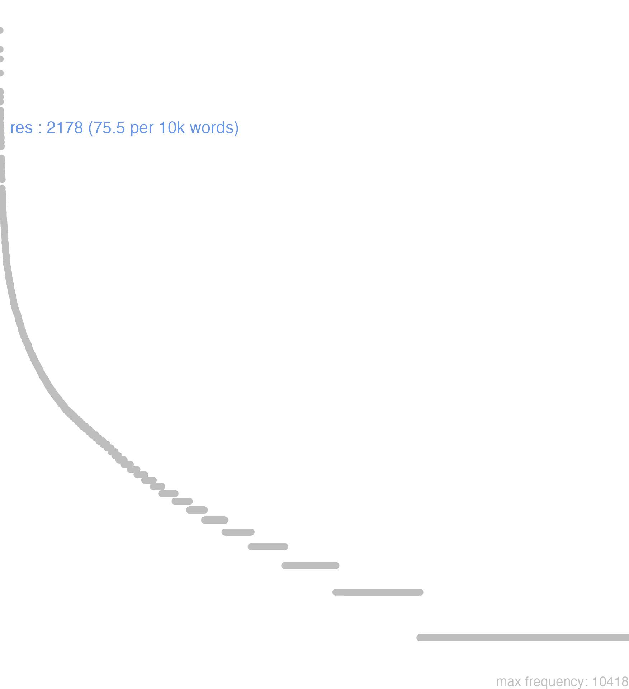

152 res
152.0.0.1 bases lexicais
id: http://lila-erc.eu/data/id/lemma/121868
classe: substantivo feminino
paradigma: 5ª declinação (tema em -e-)
outras grafias:
variantes do lema:
no data
rēs
reī
no data
152.0.0.2 dicionários tradicionais
res rĕī em poesia tambēm rēī ou rei monos.
subs. f.
Obs.: Do sentido de bens, propriedade, decorre o de proveito em alguma coisa, e daí: interesse a discutir, negócio a tratar ou discutir principalmente na Justiça, e depois em sua acepção geral. Res, designando bens concretos, passou a exprimir o que existe, a realidade, a coisa ou o fato, sendo assim, por seu sentido vago, como que um substituto polido de uma expressão que se quer evitar. Em poesia também aparece rei Luc. 1, 688 ou rei como monossílabo Lucr. 4, 885.
subs. f.
Obs.: Do sentido de bens, propriedade, decorre o de proveito em alguma coisa, e daí: interesse a discutir, negócio a tratar ou discutir principalmente na Justiça, e depois em sua acepção geral. Res, designando bens concretos, passou a exprimir o que existe, a realidade, a coisa ou o fato, sendo assim, por seu sentido vago, como que um substituto polido de uma expressão que se quer evitar. Em poesia também aparece rei Luc. 1, 688 ou rei como monossílabo Lucr. 4, 885.
1 I-Sent. próprio Bens, propriedade, posses, interesse em alguma coisa Cés. B. Gal. 1, 18, 4.
2 I-Daí Utilidade, vantagem, interesse em várias locuções:
3 II-Sent. particular: Assunto judiciário, litígio, questão judicial, processo Cíc. Mil. 15.
4 II-Daí: Negócio sent. genérico Cíc. Verr. 2, 172.
5 III-Sents. diversos: Fato, realidade Cíc. Verr. 5, 87.
6 III-Sents. diversos: Ação realizada, fato, coisa, acontecimento, empresa, façanhas, feitos militares, fatos históricos, feitos notáveis sent. mais comum Cíc. Verr. 4, 63.
7 III-Sents. diversos: Situação, condição, circunstância, ocasião Ter. Ad. 293; Cíc. At. 7, 8, 2.
8 III-Sents. diversos: A coisa pública, os negócios públicos, o Estado, poder, autoridade Cíc. Rep. 1, 12.
9 III-Sents. diversos: Motivo, causa, fim, plano Cíc. At. 8, 8, 1.
[EXEMPLOS]
2
in rem esse alicui Plaut. Aul. 129 ‘ser vantajoso para alguém’: ex tua re non est, ut Plaut. PS. 388 “não é vantajoso para ti que …”: e re publica Cíc. De Or. 2. 124 ‘no interesse geral’; ab re aliquid orare Plau,t.Capt.338 “pedir alguma coisa contrária aos seus interesses”.
no data
Res rei
f.
f.
1 Cic. cousa.
2 negocio.
3 utilidade.
4 interesse.
5 fazenda, bens da fortuna.
6 herança, patrimonio.
7 modo, occasiaõ.
[EXEMPLOS]
X
e re nata Ter Opportunamente, segundo a occasiaõ, que se offerece
pro re nata Cic Opportunamente, segundo a occasiaõ, que se offerece
re Cic Effectivamente, na realidade
reipsa Cic Effectivamente, na realidade
rem augere Cic Enriquecer-se
rem male gerere Hor Manejar mal os seus negocios
rerum potiri Liv Ter a suprema authoridade
res familiaris Cic Fazenda, bens da casa
res Romana Liv Exercito Romano
reuera Cic Effectivamente, na realidade
Res rei
Vide Ab, Ago, & Natus.
Vide Ab, Ago, & Natus.
1 a cousa, contenda, demanda, negocio, poder, utilidade, riqueza, etc
[EXEMPLOS]
X
ab re do successo interdum ponitur pro Ab eventu
e re nata conforme a occasiaõ
ex re ipsa natum o que naõ se diz de cuidado, mas occorre de repente
Res rei
1 a cousa. ou fazenda
Res rei1 a demanda
152.0.0.3 dados de corpus
![This chart plots collocate by scoreSUBST, for the headword res here are all the values plotted: collocate: publicus; scoreSUBST: 0. collocate: ob; scoreSUBST: 0. collocate: de; scoreSUBST: 0. collocate: in; scoreSUBST: 0. collocate: is; scoreSUBST: 0. collocate: hic; scoreSUBST: 0. collocate: omnis; scoreSUBST: 0. collocate: qui; scoreSUBST: 0. collocate: gero; scoreSUBST: 0. collocate: ad; scoreSUBST: 0. collocate: magnus; scoreSUBST: 0. collocate: nullus; scoreSUBST: 0. collocate: tantus; scoreSUBST: 0. collocate: nouus; scoreSUBST: 0. collocate: ipse; scoreSUBST: 0. collocate: contra; scoreSUBST: 0. collocate: militaris; scoreSUBST: 0. collocate: totus; scoreSUBST: 0. collocate: multus; scoreSUBST: 0. collocate: natura; scoreSUBST: 2. collocate: frumentarius; scoreSUBST: 0. collocate: ago; scoreSUBST: 0. collocate: pro; scoreSUBST: 0. collocate: ceterus; scoreSUBST: 0. collocate: cognosco; scoreSUBST: 0. collocate: ullus; scoreSUBST: 0. collocate: conficio; scoreSUBST: 0. collocate: familiaris; scoreSUBST: 0. collocate: salus; scoreSUBST: 2. collocate: humanus; scoreSUBST: 0. collocate: capitalis; scoreSUBST: 0. collocate: diuinus; scoreSUBST: 0. collocate: pernicies; scoreSUBST: 2. collocate: cupidus; scoreSUBST: 0. collocate: conseruo; scoreSUBST: 0. collocate: secundus; scoreSUBST: 0. collocate: prosper; scoreSUBST: 0. collocate: coniectura; scoreSUBST: 2. collocate: fictus; scoreSUBST: 0. collocate: maritimus; scoreSUBST: 0. collocate: rusticus; scoreSUBST: 0. collocate: amans2; scoreSUBST: 0. collocate: difficultas; scoreSUBST: 2. collocate: scientia; scoreSUBST: 2. collocate: ignarus; scoreSUBST: 0. collocate: caritas; scoreSUBST: 2. collocate: studeo; scoreSUBST: 0. collocate: inopia; scoreSUBST: 2. collocate: ornatus; scoreSUBST: 0. collocate: summa; scoreSUBST: 2. collocate: status; scoreSUBST: 2](./Media/wordcloud__xx114-101-115xx__BY_collocate_scoreSUBST.webp)
![This chart plots collocate by scoreADJ, for the headword res here are all the values plotted: collocate: publicus; scoreADJ: 5. collocate: ob; scoreADJ: 0. collocate: de; scoreADJ: 0. collocate: in; scoreADJ: 0. collocate: is; scoreADJ: 0. collocate: hic; scoreADJ: 0. collocate: omnis; scoreADJ: 0. collocate: qui; scoreADJ: 0. collocate: gero; scoreADJ: 0. collocate: ad; scoreADJ: 0. collocate: magnus; scoreADJ: 2. collocate: nullus; scoreADJ: 0. collocate: tantus; scoreADJ: 0. collocate: nouus; scoreADJ: 3. collocate: ipse; scoreADJ: 0. collocate: contra; scoreADJ: 0. collocate: militaris; scoreADJ: 3. collocate: totus; scoreADJ: 0. collocate: multus; scoreADJ: 0. collocate: natura; scoreADJ: 0. collocate: frumentarius; scoreADJ: 4. collocate: ago; scoreADJ: 0. collocate: pro; scoreADJ: 0. collocate: ceterus; scoreADJ: 0. collocate: cognosco; scoreADJ: 0. collocate: ullus; scoreADJ: 0. collocate: conficio; scoreADJ: 0. collocate: familiaris; scoreADJ: 2. collocate: salus; scoreADJ: 0. collocate: humanus; scoreADJ: 2. collocate: capitalis; scoreADJ: 2. collocate: diuinus; scoreADJ: 2. collocate: pernicies; scoreADJ: 0. collocate: cupidus; scoreADJ: 2. collocate: conseruo; scoreADJ: 0. collocate: secundus; scoreADJ: 2. collocate: prosper; scoreADJ: 2. collocate: coniectura; scoreADJ: 0. collocate: fictus; scoreADJ: 2. collocate: maritimus; scoreADJ: 2. collocate: rusticus; scoreADJ: 2. collocate: amans2; scoreADJ: 2. collocate: difficultas; scoreADJ: 0. collocate: scientia; scoreADJ: 0. collocate: ignarus; scoreADJ: 2. collocate: caritas; scoreADJ: 0. collocate: studeo; scoreADJ: 0. collocate: inopia; scoreADJ: 0. collocate: ornatus; scoreADJ: 2. collocate: summa; scoreADJ: 0. collocate: status; scoreADJ: 0](./Media/wordcloud__xx114-101-115xx__BY_collocate_scoreADJ.webp)
![This chart plots collocate by scoreVERBO, for the headword res here are all the values plotted: collocate: publicus; scoreVERBO: 0. collocate: ob; scoreVERBO: 0. collocate: de; scoreVERBO: 0. collocate: in; scoreVERBO: 0. collocate: is; scoreVERBO: 0. collocate: hic; scoreVERBO: 0. collocate: omnis; scoreVERBO: 0. collocate: qui; scoreVERBO: 0. collocate: gero; scoreVERBO: 4. collocate: ad; scoreVERBO: 0. collocate: magnus; scoreVERBO: 0. collocate: nullus; scoreVERBO: 0. collocate: tantus; scoreVERBO: 0. collocate: nouus; scoreVERBO: 0. collocate: ipse; scoreVERBO: 0. collocate: contra; scoreVERBO: 0. collocate: militaris; scoreVERBO: 0. collocate: totus; scoreVERBO: 0. collocate: multus; scoreVERBO: 0. collocate: natura; scoreVERBO: 0. collocate: frumentarius; scoreVERBO: 0. collocate: ago; scoreVERBO: 2. collocate: pro; scoreVERBO: 0. collocate: ceterus; scoreVERBO: 0. collocate: cognosco; scoreVERBO: 2. collocate: ullus; scoreVERBO: 0. collocate: conficio; scoreVERBO: 2. collocate: familiaris; scoreVERBO: 0. collocate: salus; scoreVERBO: 0. collocate: humanus; scoreVERBO: 0. collocate: capitalis; scoreVERBO: 0. collocate: diuinus; scoreVERBO: 0. collocate: pernicies; scoreVERBO: 0. collocate: cupidus; scoreVERBO: 0. collocate: conseruo; scoreVERBO: 2. collocate: secundus; scoreVERBO: 0. collocate: prosper; scoreVERBO: 0. collocate: coniectura; scoreVERBO: 0. collocate: fictus; scoreVERBO: 0. collocate: maritimus; scoreVERBO: 0. collocate: rusticus; scoreVERBO: 0. collocate: amans2; scoreVERBO: 0. collocate: difficultas; scoreVERBO: 0. collocate: scientia; scoreVERBO: 0. collocate: ignarus; scoreVERBO: 0. collocate: caritas; scoreVERBO: 0. collocate: studeo; scoreVERBO: 2. collocate: inopia; scoreVERBO: 0. collocate: ornatus; scoreVERBO: 0. collocate: summa; scoreVERBO: 0. collocate: status; scoreVERBO: 0](./Media/wordcloud__xx114-101-115xx__BY_collocate_scoreVERBO.webp)
![This chart plots collocate by scoreADV, for the headword res here are all the values plotted: collocate: publicus; scoreADV: 0. collocate: ob; scoreADV: 0. collocate: de; scoreADV: 0. collocate: in; scoreADV: 0. collocate: is; scoreADV: 0. collocate: hic; scoreADV: 0. collocate: omnis; scoreADV: 0. collocate: qui; scoreADV: 0. collocate: gero; scoreADV: 0. collocate: ad; scoreADV: 0. collocate: magnus; scoreADV: 0. collocate: nullus; scoreADV: 0. collocate: tantus; scoreADV: 0. collocate: nouus; scoreADV: 0. collocate: ipse; scoreADV: 0. collocate: contra; scoreADV: 0. collocate: militaris; scoreADV: 0. collocate: totus; scoreADV: 0. collocate: multus; scoreADV: 0. collocate: natura; scoreADV: 0. collocate: frumentarius; scoreADV: 0. collocate: ago; scoreADV: 0. collocate: pro; scoreADV: 0. collocate: ceterus; scoreADV: 0. collocate: cognosco; scoreADV: 0. collocate: ullus; scoreADV: 0. collocate: conficio; scoreADV: 0. collocate: familiaris; scoreADV: 0. collocate: salus; scoreADV: 0. collocate: humanus; scoreADV: 0. collocate: capitalis; scoreADV: 0. collocate: diuinus; scoreADV: 0. collocate: pernicies; scoreADV: 0. collocate: cupidus; scoreADV: 0. collocate: conseruo; scoreADV: 0. collocate: secundus; scoreADV: 0. collocate: prosper; scoreADV: 0. collocate: coniectura; scoreADV: 0. collocate: fictus; scoreADV: 0. collocate: maritimus; scoreADV: 0. collocate: rusticus; scoreADV: 0. collocate: amans2; scoreADV: 0. collocate: difficultas; scoreADV: 0. collocate: scientia; scoreADV: 0. collocate: ignarus; scoreADV: 0. collocate: caritas; scoreADV: 0. collocate: studeo; scoreADV: 0. collocate: inopia; scoreADV: 0. collocate: ornatus; scoreADV: 0. collocate: summa; scoreADV: 0. collocate: status; scoreADV: 0](./Media/wordcloud__xx114-101-115xx__BY_collocate_scoreADV.webp)
![This chart plots collocate by scoreFUNC, for the headword res here are all the values plotted: collocate: publicus; scoreFUNC: 0. collocate: ob; scoreFUNC: 50. collocate: de; scoreFUNC: 40. collocate: in; scoreFUNC: 30. collocate: is; scoreFUNC: 0. collocate: hic; scoreFUNC: 0. collocate: omnis; scoreFUNC: 0. collocate: qui; scoreFUNC: 0. collocate: gero; scoreFUNC: 0. collocate: ad; scoreFUNC: 20. collocate: magnus; scoreFUNC: 0. collocate: nullus; scoreFUNC: 0. collocate: tantus; scoreFUNC: 0. collocate: nouus; scoreFUNC: 0. collocate: ipse; scoreFUNC: 0. collocate: contra; scoreFUNC: 30. collocate: militaris; scoreFUNC: 0. collocate: totus; scoreFUNC: 0. collocate: multus; scoreFUNC: 0. collocate: natura; scoreFUNC: 0. collocate: frumentarius; scoreFUNC: 0. collocate: ago; scoreFUNC: 0. collocate: pro; scoreFUNC: 20. collocate: ceterus; scoreFUNC: 0. collocate: cognosco; scoreFUNC: 0. collocate: ullus; scoreFUNC: 0. collocate: conficio; scoreFUNC: 0. collocate: familiaris; scoreFUNC: 0. collocate: salus; scoreFUNC: 0. collocate: humanus; scoreFUNC: 0. collocate: capitalis; scoreFUNC: 0. collocate: diuinus; scoreFUNC: 0. collocate: pernicies; scoreFUNC: 0. collocate: cupidus; scoreFUNC: 0. collocate: conseruo; scoreFUNC: 0. collocate: secundus; scoreFUNC: 0. collocate: prosper; scoreFUNC: 0. collocate: coniectura; scoreFUNC: 0. collocate: fictus; scoreFUNC: 0. collocate: maritimus; scoreFUNC: 0. collocate: rusticus; scoreFUNC: 0. collocate: amans2; scoreFUNC: 0. collocate: difficultas; scoreFUNC: 0. collocate: scientia; scoreFUNC: 0. collocate: ignarus; scoreFUNC: 0. collocate: caritas; scoreFUNC: 0. collocate: studeo; scoreFUNC: 0. collocate: inopia; scoreFUNC: 0. collocate: ornatus; scoreFUNC: 0. collocate: summa; scoreFUNC: 0. collocate: status; scoreFUNC: 0](./Media/wordcloud__xx114-101-115xx__BY_collocate_scoreFUNC.webp)
![This charts plots the frequency of lemma by author_Frequencies. The Sallustius subcorpus registers the highest normalized frequency, with the value of 131.71 and an absolute frequency of 142. The Cicero subcorpus follows, with a normalized frequency of 93.82 and an absolute frequency of 1506. the subcorpus with the least normalized frequency is Hieronymus with the normalized value of 0 and an absolute freqeuncy of 0. here are all the values: subcorpus: Caesar ; normalized frequency: 233 ; absolute frequency: 87.9975828990105. subcorpus: Cicero ; normalized frequency: 1506 ; absolute frequency: 93.8177468789714. subcorpus: Horatius ; normalized frequency: 30 ; absolute frequency: 26.640618062339. subcorpus: Ovidius ; normalized frequency: 4 ; absolute frequency: 6.86341798215511. subcorpus: Phaedrus ; normalized frequency: 15 ; absolute frequency: 22.772126916654. subcorpus: Sallustius ; normalized frequency: 142 ; absolute frequency: 131.713199146647. subcorpus: Seneca ; normalized frequency: 207 ; absolute frequency: 38.6330975532372. subcorpus: Suetonius ; normalized frequency: 3 ; absolute frequency: 33.0760749724366. subcorpus: Tacitus ; normalized frequency: 22 ; absolute frequency: 75.5235152763474. subcorpus: Vergilius ; normalized frequency: 16 ; absolute frequency: 30.8880308880309. subcorpus: Hieronymus ; normalized frequency: 0 ; absolute frequency: 0](./Media/barchart__xx114-101-115xx__lemma_BY_author_Frequencies.webp)
![This charts plots the frequency of lemma by genre_Frequencies. The Prosa.oratória subcorpus registers the highest normalized frequency, with the value of 100.05 and an absolute frequency of 1042. The Prosa.histórica subcorpus follows, with a normalized frequency of 97.37 and an absolute frequency of 400. the subcorpus with the least normalized frequency is Prosa.ficcional with the normalized value of 0 and an absolute freqeuncy of 0. here are all the values: subcorpus: Prosa.histórica ; normalized frequency: 400 ; absolute frequency: 97.3733537817376. subcorpus: Prosa.filosófica ; normalized frequency: 347 ; absolute frequency: 57.1654503220705. subcorpus: Prosa.oratória ; normalized frequency: 1042 ; absolute frequency: 100.045125920521. subcorpus: Prosa.epistolográfica ; normalized frequency: 315 ; absolute frequency: 83.46803041946. subcorpus: Poesia.lírica ; normalized frequency: 30 ; absolute frequency: 25.2376545806343. subcorpus: Poesia.didática ; normalized frequency: 19 ; absolute frequency: 16.116718975316. subcorpus: Poesia.trágica ; normalized frequency: 9 ; absolute frequency: 7.81792911744267. subcorpus: Poesia.épica ; normalized frequency: 16 ; absolute frequency: 30.8880308880309. subcorpus: Prosa.ficcional ; normalized frequency: 0 ; absolute frequency: 0](./Media/barchart__xx114-101-115xx__lemma_BY_genre_Frequencies.webp)
![This charts plots the frequency of lemma by period_Frequencies. The I.a.C. subcorpus registers the highest normalized frequency, with the value of 89.69 and an absolute frequency of 1927. The I.d.C. subcorpus follows, with a normalized frequency of 34.57 and an absolute frequency of 226. the subcorpus with the least normalized frequency is IV.d.C. with the normalized value of 0 and an absolute freqeuncy of 0. here are all the values: subcorpus: I.a.C. ; normalized frequency: 1927 ; absolute frequency: 89.6904817314405. subcorpus: I.d.C. ; normalized frequency: 226 ; absolute frequency: 34.5724338381521. subcorpus: II.d.C. ; normalized frequency: 25 ; absolute frequency: 65.4450261780105. subcorpus: IV.d.C. ; normalized frequency: 0 ; absolute frequency: 0](./Media/barchart__xx114-101-115xx__lemma_BY_period_Frequencies.webp)
rerum scientia
Sen.Ep.31.6
O conhecimento das coisas. [JDD]
rem totam aestimabunt
Cic.Att.4.1.7
farão a avaliação de tudo [JDD]
res ad senatum
Cic.Att.4.17.3
o assunto foi para o senado. [JDD]
nunc cognosce rem
Cic.Att.1.1.3
Agora inteira-te da situação. [JDD]
acta res est
Cic.Att.1.14.5
A coisa estava resovida. [JDD]
cetera in magnis rebus
Cic.Att.2.19.1
O resto nos grandes assuntos. [JDD]
quam ob rem audiamus
Cic.Amici.33
Por essa razão, ouçamos. [JDD]
amicitia res plurimas continet
Cic.Amici.22
a amizade contém muitíssimas coisas. [JDD]
multa signa sunt eius rei
Cic.Att.1.10.5
Há muitos indícios disso. [JDD]
rem optime ductu suo gerere
Cic.Man.61
E conduzir otimamente a tarefa sob seu comando? [JDD]
si minus rem tamen conficies
Cic.Att.5.4.2
se não, levarás, mesmo assim, até o fim o assunto. [JDD]
nunc rem totam perspicias velim
Cic.Att.5.8.3
Agora eu gostaria que examinasses com atenção a coisa toda. [JDD]
a rebus gerundis senectus abstrahit
Cic.Sen.15
A velhice nos afasta das atividades. [JDD, de outra edição]
est res sane magni consili
Cic.Att.2.3.3
É, sem dúvida, uma coisa de grande reflexão. [JDD]
stantes plaudebant in re ficta
Cic.Amici.24
Aplaudiam, estando de pé, numa situação fictícia. [JDD]
rem publicam nulla ex parte attingimus
Cic.Att.2.22.3
Não tomamos nenhum partido em relação à república. [JDD]
magnam rem puta unum hominem agere
Sen.Ep.120.22
Considera uma grande coisa agir como um único homem. [JDD]
multo haec inquam nostra res maior
Cic.Att.1.16.5
este meu caso, eu garanto, foi muito maior. [JDD]
militiae uacationem omniumque rerum habent immunitatem
Caes.Gal.6.14.1
têm isenção do serviço militar e imunidade de todas os encargos. [JDD]
quae res magno usui nostris fuit
Caes.Gal.4.25.1
coisa que foi de grande utilidade para os nossos. [JDD]
haec sunt ut opinor in re publica
Cic.Att.1.19.5
Isto é, a meu ver, o que há na república. [JDD]
eas scilicet quibus rei publicae salus continetur
Cic.Phil.1.25.9
Evidentemente daqueles com os quais se mantém a salvação da república. [JDD]
qua re impetrata arma tradere iussi faciunt
Caes.Gal.3.21.3
Conseguida essa coisa, ordenados a entregar as armas, eles fazem. [JDD]
sed de re publica non libet plura scribere
Cic.Att.2.18.3
Mas não tenho mais vontade de escrever sobre a república. [JDD]
summa rei in utroque eadem est non torqueberis
Sen.Ep.119.2
O resultado é o mesmo em ambos os casos: não serás atormentado. [JDD]
in re familiari valde sumus ut scis perturbati
Cic.Att.4.1.8
Com relação meu patrimônio, estou, como sabes, muito perturbado. [JDD]
uidete iudices quantae res his testimoniis sint confectae
Cic.Mil.47
Vede, juízes, que importantes fatos foram estabelecidos com esses testemunhos. [JDD]
res praetoribus erat nota solis ignorabatur a ceteris
Cic.Catil.3.6.4
O fato só era conhecido dos pretores, era ignorado pelos outros. [JDD]
qui emisisset eum contra rem publicam esse facturum
Cic.Att.2.24.3
e que quem o soltasse agiria contra a república. [JDD, de outra edição]
multos enim eius praeclaros de re publica sermones accipiam
Cic.Att.5.6.1
pois ouvirei muitas falas brilhantes dele sobre a república. [JDD]
Pisonem consulem nulla in re consistere umquam sum passus
Cic.Att.1.16.8
não mais permiti que o cônsul Pisão se firmasse em coisa alguma. [JDD]
neque adhuc res confecta est sed voluntas senatus perspecta
Cic.Att.1.17.9
Nada foi feito ainda, mas a vontade do senado está clara. [JDD, de outra edição]
in re publica vero quamquam animus est praesens tamen
Cic.Att.1.18.2
na república, embora não me falte coragem, a própria medicina me causa ferimento uma ou outra vez. [JDD, de outra edição]
cedo qui uestram rem publicam tantam amisistis tam cito
Cic.Sen.20
“Diz como perdestes tão depressa vossa república tão poderosa?” [JDD]
de re publica nisi per concilium loqui non conceditur
Caes.Gal.6.20.3
Sobre a república, a não ser através de uma assembléia, não é concedido falar. [JDD]
quae quidem res ad negotium conficiendum maximae fuit opportunitati
Caes.Gal.3.15.4
Esse fato, na verdade, foi especialmente oportuno para concluir o negócio. [JDD, de outra edição]
atque hoc quidem omnes mortales et intellegunt et re probant
Cic.Amici.24
E, na verdade, todos os mortais entendem isso e aprovam na realidade. [JDD]
sed in magna copia rerum aliud alii natura iter ostendit
Sal.Cat.3.1
Mas em meio a uma grande abundância de coisas a natureza mostra um caminho para um e outro para outro. [JDD]
nunc si iam res placeat agendi tamen viam non video
Cic.Att.5.4.1
Agora, se a coisa já me parece bem, não vejo, contudo, um meio de atuar. [JDD]
itaque eos cedentis ab oppido Cassius insecutus rem bene gessit
Cic.Att.5.20.3
e assim, enquanto esses saíam da cidadela, Cássio, perseguindo-os, realizou um boa gesta. [JDD]
itaque in tanta rerum iniquitate fortunae quoque euentus uarii sequebantur
Caes.Gal.2.22.2
E assim, em meio a tão grande desigualdade de condições, também seguiam os variados acontecimentos da fortuna. [JDD]
omnes ordines ad conseruandam rem publicam mente uoluntate uoce consentiunt
Cic.Catil.4.18.6
Todas as classes concordam com a mente, com a vontade, com a voz para salvar a república. [JDD]
flagrabant uitia libidinis apud illum uigebant etiam studia rei militaris
Cic.Cael.12
Ardiam nele os vícios do prazer libidinoso; florescia também o gosto pelos assuntos militares. [JDD]
non est enim in rebus uitium sed in ipso animo
Sen.Ep.17.12
pois o vício não está nas coisas, mas no próprio espírito. [JDD]
ita fato placuit nullius rei eodem semper loco stare fortunam
Sen.Helv.7.10
Assim agradou ao destino que a sorte de coisa alguma ficasse sempre no mesmo lugar. [JDD]
atque huiusce rei coniecturam de tuo ipsius studio Serui facillime ceperis
Cic.Mur.9
E muito facilmente, Sérvio, farás uma conjectura disso por tua própria ocupação. [JDD]
habere uidetur ista res iniquitatem si imperare uelis difficultatem si rogare
Cic.Catil.4.7.17
Essa decisão parece ter uma iniquidade, se queres ordenar, uma dificuldade, se queres pedir. [JDD]
ille praetoris arcessitus nuntio rem demonstrat negat ullo modo fieri posse
Cic.Ver.2.4.85.16
Aquele, chamado por um mensageiro do pretor, lhe mostra a situação; diz que não pode se fazer de modo algum. [JDD]
non est saepius in uno homine summa salus periclitanda rei publicae
Cic.Catil.1.11.5
Não se deve pôr em perigo tantas vezes a suprema salvação da república em um único homem. [JDD]
illi rebus diuinis intersunt sacrificia publica ac priuata procurant religiones interpretantur
Caes.Gal.6.13.4
Aqueles se ocupam com os cultos divinos, cuidam dos sacrifícios públicos e privados, interpretam os rituais religiosos. [JDD]
152.0.0.4 Diagrama de Zipf
